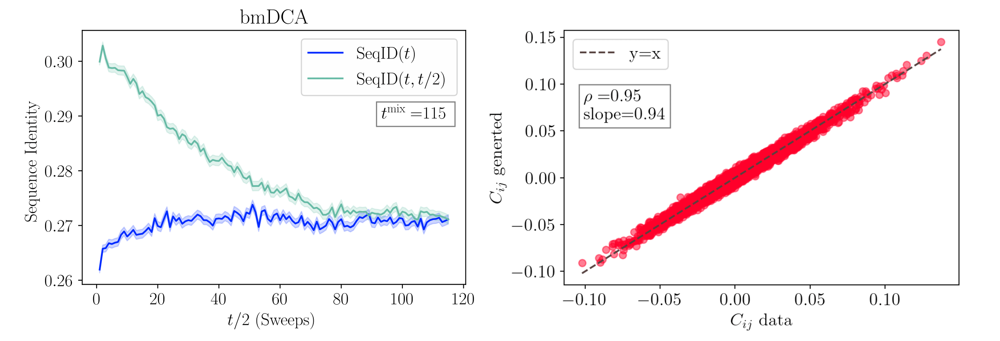

Applications
Info
We report in the Script arguments section the list of all the possible input arguments of each routine. The same information can be shown from the command line using:
adabmDCA <routine_name> -h
🧬 Generate Sequences
Once a model is trained, it can be used to generate new sequences with:
adabmDCA sample -p <path_params> -d <fasta_file> -o <output_folder> --ngen <num_gen>
<output_folder>: directory to save the output.<num_gen>: number of sequences to generate.
The tool first estimates the mixing time t_mix by simulating chains from the MSA. It then initializes num_gen Markov chains and runs nmix * t_mix sweeps (default nmix = 2) to ensure thermalization.
📦 Output Files:
- A FASTA file of generated sequences
- A log file for reproducing the mixing time surves (Fig. 3-left)
- A log file tracking the Pearson \(C_{ij}\) score as a function of the sampling time
Convergence Criterion
To ensure proper sampling, sequence identity is used to track mixing:
- \(\mathrm{SeqID}(t)\) = identity between pairs of independent samples
- \(\mathrm{SeqID}(t, t/2)\) = identity between the same chain at different times
Denoting \(\pmb{a}_i(t)\) the i-th sequence of the MSA at sampling time \(t\), these are computed as:
where \(\sigma(i)\) is a random permutation of the index \(i\) and
Convergence is assumed when \(\mathrm{SeqID}(t) \cong \mathrm{SeqID}(t, t/2)\).
 Figure 3: Analysis of a bmDCA model. Left: measuring the mixing time of the model using \(10^4\) chains. The curves represent the average overlap among randomly initialized samples (dark blue) and the one among the same sequences between times \(t\) and \(t/2\) (light blue). Shaded areas represent the error of the mean. When the two curves merge, we can assume that the chains at time \(t\) forgot the memory of the chains at time \(t/2\). This point gives us an estimate of the model's mixing time, \(t^{\mathrm{mix}}\). Notice that the times start from 1, so the starting conditions are not shown. Right: Scatter plot of the entries of the Covariance matrix of the data versus that of the generated samples.
🔗 Contact Prediction
One of the principal applications of the DCA models has been that of predicting a tertiary structure of a protein or RNA domain. In particular, with each pair of sites \(i\) and \(j\) in the MSA, adabmDCA 2.0 computes a contact score that quantifies how likely the two associated positions in the chains are in contact in the three-dimensional structure.
Formally, it corresponds to the average-product corrected (APC) Frobenius norms of the coupling matrices [Ekeberg et al., 2013], i.e.
To compute contact scores:
adabmDCA contacts -p <file_params> -o <output_folder>
Zero-sum gauge and gap symbols are handled internally.
📦 Output Files:
<label>_frobenius.txtwith scores for each pair.
📉 Sequence Scoring
To score sequences using the DCA energy with a trained model:
adabmDCA energies -d <fasta_file> -p <file_params> -o <output_folder>
📦 Output Files:
- FASTA file where each sequence is annotated with its statistical energy. Lower energies correspond to more likely (or better fitting) sequences under the model.
🧪 Single Mutant Library
To simulate a mutational scan around a wild-type sequence:
adabmDCA DMS -d <WT> -p <file_params> -o <output_folder>
📦 Output Files:
- FASTA file where each sequence represents a single-point mutant, named by mutation and \(\Delta E\) (change in energy). Example:
>G27A | DCAscore: -0.6
Negative \(\Delta E\) suggests improved fitness.
🔁 Reintegrated DCA Model from Experiments
As described in [Calvanese et al., 2025], it is possible to train a DCA model informed with experimental feedback in order to improve the model's ability of generating functional sequences:
adabmDCA reintegrate -d <nat_msa> -o <output_folder> --reint <reint_msa> --adj <adj_vector> --lambda_ <lambda_value> --alphabet <protein/rna>
Parameters:
nat_msa: MSA of natural sequencesreint_msa: MSA of tested sequencesadj_vector: a text file containing experimental results for the reintegration dataset. Each line of the file should contain+1or-1, where the i-th line corresponds to:1if the i-th sequence of thereint_msapasses the experimental test;-1if the i-th sequence does not pass the experimental test;
lambda_: reintegration strength (default: 1)alphabet:proteinorrna, sequence type
💡 Tip: It is possible to use continuous values from -1 to 1 for the adj_vector, depending on the performance of the sequence in the experiment. Additionally, the lambda_ parameter can be fine-tuned to adjust the reintegration strength. If unsure, a good starting point is to use lambda_ = 1 and ±1 values for the adj_vector.
🧠 Train/Test Split for Homologous Sequences
When dealing with a family of homologous sequences, splitting data into training and test sets has to be done carefully. There are two main reasons for this:
- Since homology introduces correlations between sequences, a simple random split would yield a test set that closely reproduces the training set on any statistical test,
- Because some regions of the sequence space are sampled more than others, the test set might contain densely populated clusters of sequences that would bias any type of assessment.
To overcome these issues, we propose a simplified GPU-accelerated version of the cobalt algorithm introduced in [Petti et al., 2022]. The algorithm proceeds in two steps:
- A first train/test split is done, such that no sequence in the test set has more than
t1fractional sequences identity with any sequences in the training set; - The test set is pruned until any two sequences in it have fractional sequence identity that does not exceeds the value
t2.
Typical usage:
adabmDCA profmark -t1 <t1> -t2 <t2> --bestof <n_trials> <output_prefix> <input_msa>
Required:
t1: max train/test identityt2: max identity within test setn_trials: number of trials to find best splitoutput_prefix: generates<output_prefix>.trainand<output_prefix>.testfilesinput_msa: input MSA in FASTA format
Optional:
-t3: max train/train identity--maxtrain,--maxtest: size limits for train and test sets--alphabet: sequence type (protein,rna,dna)--seed: random seed (default 42)--device: computation device (defaultcuda)